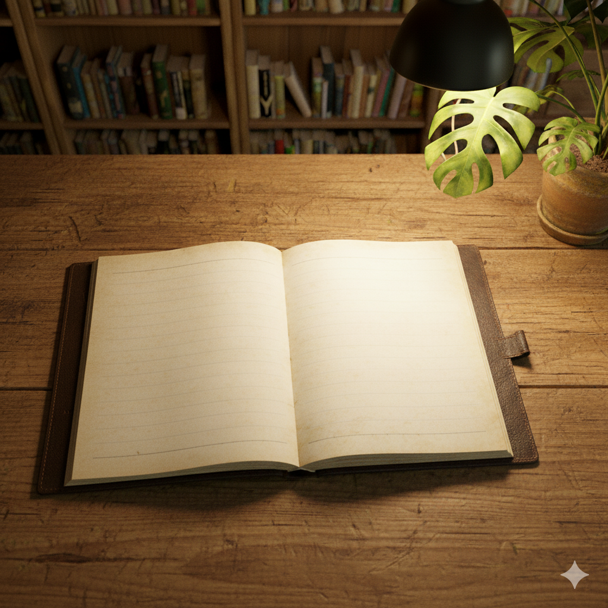

October 10, 2025
Finally, my own garden is complete. The small hill I've always dreamed of, a quiet place to spend the rest of my life, is now a reality before my very eyes. It's a moment that makes me truly grateful for the advancement of technology. As if to celebrate the completion of my sanctuary, the autumn sunlight warmly embraces me here in the middle of the green forest.
I've dedicated my entire life to helping people enjoy a more convenient and personalized musical experience. Thanks to that work, countless people can now feel and enjoy their emotions anytime, with the music they desire. And now, I want to use that effort for myself. The speakers here change the music according to my mood, the situation, or my spoken requests, sometimes even composing something new. The thought that sounds filled with my own emotions will continuously wrap around and echo in this small space fills my heart with an inexplicable sense of being moved.